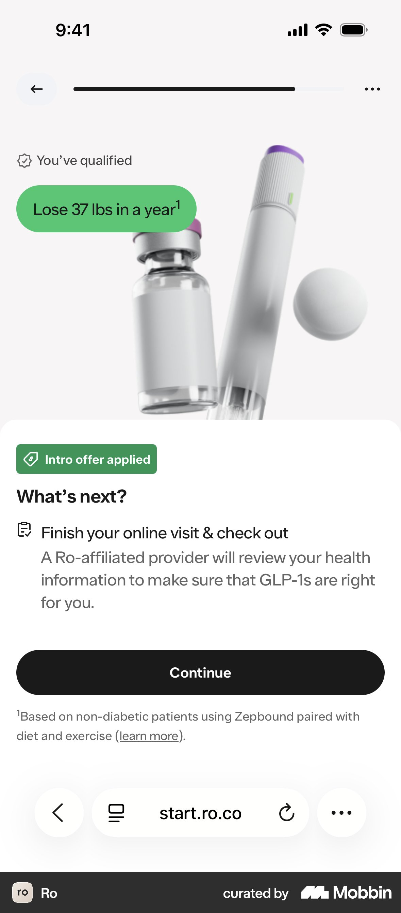
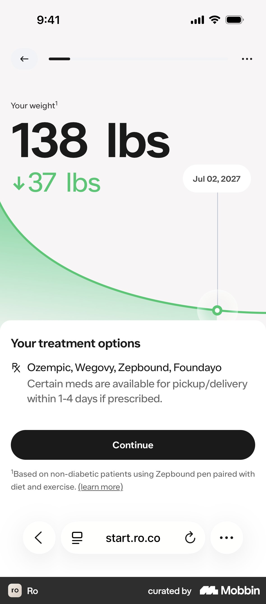
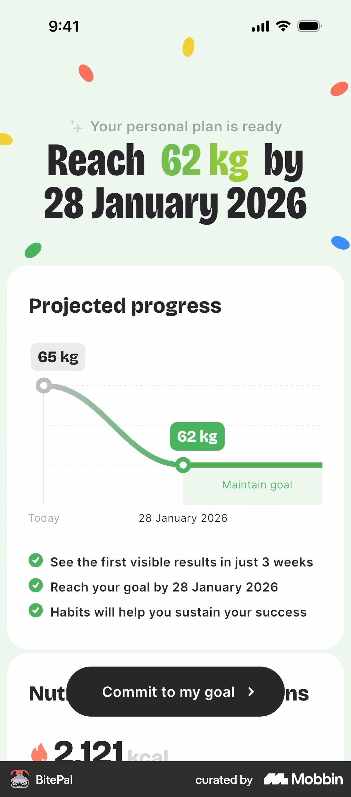
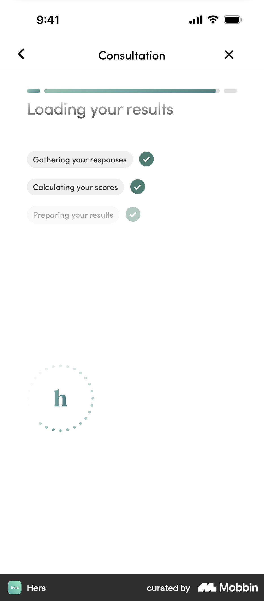
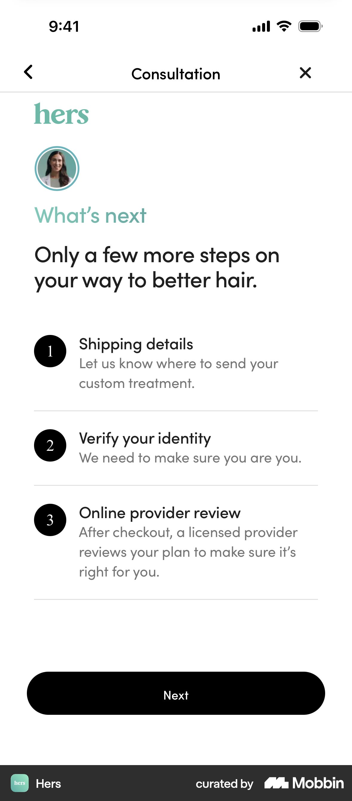

Mobbin: quiz result / "you qualify" / plan reveal
Source: Mobbin MCP only (iOS mostly; web search returned nothing relevant for Ro/Hims). 10 searches, judged from screenshots.
Images: .research/img/mobbin-results/
1. "You've qualified" + "What's next" (Ro, GLP-1)

- What: Small check-chip "You've qualified" on top, a green outcome pill ("Lose 37 lbs in a year" with footnote), product photo, then a bottom sheet: "What's next?" with one step ("A Ro-affiliated provider will review your health information to make sure GLP-1s are right for you") and one black Continue button. Footnote links the source of the claim.
- Why it works: Gives the verdict first and quietly, and the CTA describes the next step, not a sale. Saying "the provider decides" is honest screening and builds trust. The footnote makes the number believable.
- Velora: Result header "Medicinsk viktnedgång kan passa dig" as a calm chip plus headline. Below it a "Vad händer nu?" sheet: "A licensed clinician goes through your answers with you in a free 20-minute video meeting. They decide together with you whether treatment fits." CTA "Välj en tid". No product photo, since Swedish rules on advertising prescription drugs mean we shouldn't name drugs.
- https://mobbin.com/screens/535e22ad-fa63-4ff3-a687-ab067a9d6810 (flow: https://mobbin.com/flows/c40ee07f-972a-43b2-83b4-666d7f6df86e)
2. Projected-weight curve using the user's own number (Ro)

- What: Huge type "138 lbs" (their projected weight) with "↓37 lbs" in green, a soft green area curve down to a dated marker ("Jul 02, 2027"), then "Your treatment options" in a sheet. The footnote says the estimate is based on non-diabetic patients and links "learn more".
- Why it works: The user's own numbers make the plan feel built for them. The date makes the goal concrete. The footnote keeps the claim legally and emotionally honest.
- Velora: Use height and weight from the quiz to show a range, not a single promise: "Many people lose 10–15% of their body weight in a year" (figure to verify against clinical sources). Show it as a band on the curve, with a footnote citing the study population. Keep the curve smooth, with no zig-zags and no before/after photos.
- https://mobbin.com/screens/9375fa7e-7052-472f-a9a7-08ed899a4ef2
3. Plan-ready card: headline goal + graph + 3 check bullets + sticky CTA (BitePal, Yazio, Noom, Lifesum)

- What: Eyebrow "Your personal plan is ready", headline "Reach 62 kg by 28 Jan", a "Projected progress" card (Today → goal, then a flat "Maintain goal" segment), three ✓ bullets ("first visible results in 3 weeks"), and a floating pill CTA "Commit to my goal". Yazio adds a dashed "without us" line for comparison. Noom adds "Highlights of your customized plan" bullets under the curve. Lifesum adds "Alex, you will reach your goal by…".
- Why it works: Shows the payoff before asking for anything, and the "maintain" plateau tells people the weight stays off (relevant to GLP-1 worries). The sticky CTA is always within reach.
- Velora: Result screen layout: eyebrow → personal headline (first name) → curve card with a "maintain" plateau → 3 bullets tied to their answers ("You said energy matters most → …") → sticky "Boka gratis möte". Skip Noom's 15-min "plan reserved" countdown timer. Fake urgency hurts trust in healthcare.
- BitePal https://mobbin.com/screens/00a7023b-04df-42ed-bfc3-b76ace782346 · Yazio https://mobbin.com/screens/9bb99bb2-df6d-43c1-85c8-36f90c93c51c · Noom https://mobbin.com/screens/e863b1da-a3eb-4319-aae0-efa5e3c0eff6 · Lifesum https://mobbin.com/screens/387e3e82-0f43-495e-b0c7-2596f690de3f
4. "Loading your results" checklist interstitial (Hers, Calm Sleep, BitePal, Noom)

- What: Hers is quiet and clinical: "Loading your results" with three chips that tick in turn ("Gathering your responses", "Calculating your scores", "Preparing your results"), plus a dotted brand spinner. Calm Sleep lists five ✓ rows ("Analyzing your sleep patterns…"). BitePal shows a % ring plus checklist plus a rotating review card. Noom uses colour bars per category ("Cross-checking with User Database").
- Why it works: A short "labour illusion" makes the result feel considered, not canned. It doubles as a soft transition from questions to answer. BitePal shows that this dead time can carry social proof.
- Velora: A 2–3 s interstitial with three ticks in Swedish, worded around care: "Går igenom dina svar", "Kontrollerar hälsofaktorer", "Förbereder ditt resultat". Optionally add one quote or a "Granskas av legitimerad personal" line under it. Keep it under 3 s, with no fake "database" claims (Noom's style reads gimmicky for medical).
- Hers https://mobbin.com/screens/44f7a26e-46b8-4512-a432-598171fb7885 · Calm Sleep https://mobbin.com/screens/6dfb3d50-0697-4362-9678-483b74456d34 · BitePal https://mobbin.com/screens/586cacfe-40e9-422f-94f4-e4b0ae1fac7f
5. Personal pause before the reveal (Noom)
- What: A full-screen serif line, "Based on your answers, Sam…", on cream, then the plan.
- Why it works: Uses the first name and sets up the moment. Cheap to build, high emotional pay-off. Makes the user feel understood, not processed.
- Velora: Fade "Tack, Anna. Utifrån dina svar…" into the result screen (the last step of the interstitial).
- Flow: https://mobbin.com/flows/7154e10b-ba9f-48a2-b2a4-19e7b438978e
6. Numbered "What's next" steps with a human face (Hers)

- What: Small clinician avatar, eyebrow "What's next", headline "Only a few more steps…", then 3 numbered rows (title plus one-line explanation). The last row is "Online provider review: a licensed provider reviews your plan to make sure it's right for you". One Next button.
- Why it works: Removes "what am I signing up for?" anxiety. The avatar plus "licensed provider" gives the step a person behind it. The short list makes the effort feel small.
- Velora: Put this on the result screen under the curve, and repeat it on the confirmation screen: ① Välj en tid (1 min) ② Videomöte med sjuksköterska/läkare, 20 min, gratis ③ Ni bestämmer tillsammans om behandling passar. Coinbase-style "Approx. 2 min" labels per step would help too.
- https://mobbin.com/screens/d906ade6-540e-4f08-ab77-e4ce3f8f27a8
7. Clinician card + reassurance microcopy at the booking CTA (Alan, Hers reviews)

- What: Alan shows a photo, name, role, "Available on Thursday · 45 min video session" and languages. A "Help is available" box covers distress. CTA "See availabilities", with "Free cancellation up to 48 hours in advance" underneath. Hers runs a full-screen verified-review card ("Verified review" badge, serif quote) between quiz and result. Ro uses real-member stories ("Lost 40 lbs in 11 months") next to "Start online visit".
- Why it works: A real person and a concrete next slot ("Thursday") cut the gap to booking. Microcopy under the CTA ("free cancellation") removes the last objection. Verified reviews beat anonymous stars.
- Velora: On result→booking, show the 2–3 clinicians on duty (photo, "Leg. sjuksköterska"), "Nästa lediga tid: idag 16:30", and under the CTA "Kostnadsfritt · Ingen förpliktelse · Avboka när du vill". Put one verified Trustpilot-style quote under the curve. No before/after photos.
- Alan https://mobbin.com/screens/ed903d4c-3065-4f73-a2f4-f7c6852d3736 · Hers review https://mobbin.com/screens/28da3912-080f-4135-96ff-a17d6a0aedbf · Ro stories (flow) https://mobbin.com/flows/93aa02c8-6eca-4611-88ef-0336853136ba
Anti-patterns seen (avoid)
- Noom "Personalized plan reserved, expires in 14:59" countdown: fake urgency, wrong for healthcare.
- Mascot or confetti celebration (BitePal, Yazio): too playful for a weight and health conversation.
- "Cross-checking with user database" (Noom): reads as theatre and invites distrust.
Top 3 takeaways
- Verdict, then personal proof, then next step, on one screen. A calm "may suit you" chip, a curve built from their numbers (a range, footnoted), and a "What happens next" list ending in one sticky CTA "Boka gratis möte". Ro and Hers both put the clinician's decision in the copy, which is honest screening and builds trust.
- A short, care-worded loading interstitial plus a first-name reveal ("Tack, Anna. Utifrån dina svar…"). Under 3 s, three ticks. It turns screening into "being understood" and is cheap to build.
- Make the meeting human and risk-free at the CTA. Clinician faces and credentials, the next free slot, and microcopy "Kostnadsfritt · 20 min · Avboka när du vill". Skip countdowns, mascots and before/after photos.